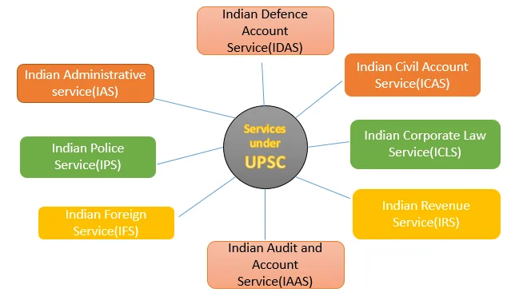
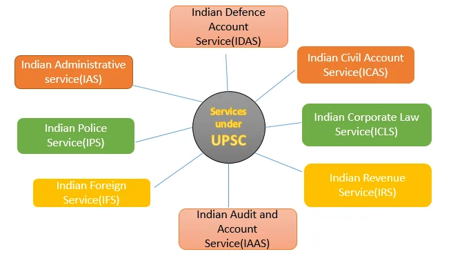

The Union Public Service Commission (UPSC) is an independent constitutional body responsible for the recruitment to the All India Services and Group A and Group B Central Services. Established under Articles 315 to 323 of the Indian Constitution, the UPSC ensures a merit-based recruitment system, playing a crucial role in maintaining the efficiency and integrity of India’s civil services. Its composition, appointment processes, and functions are meticulously defined to uphold its independence and impartiality.
Composition and Appointment (Article 316)
- Composition of UPSC: The UPSC is composed of a Chairman and other members appointed by the President of India. The Constitution does not specify the Commission’s strength, which is typically nine to eleven members, including the Chairman.
- Qualifications for Membership: No specific qualifications are mandated for Commission members, except that at least half of them should have held office for a minimum of 10 years either under the Government of India or a State Government.
- Conditions of Service: The Constitution empowers the President to determine the conditions of service for both the Chairman and the members of the UPSC.
- Tenure: The Chairman and members hold office for a term of six years or until they attain the age of 65 years, whichever is earlier.
Independence of UPSC
UPSC acts as a watchdog of the merit system while recruiting for various government positions. To ensure its independent functioning, the following provisions have been provided in the Constitution.
Removal and Resignation (Article 317):
The Chairman or a member of UPSC can be removed from office by the President only in a manner and on grounds mentioned in the Constitution. Grounds for removal include:
- If he is adjudged insolvent.
- If he occupies any other office of profit.
- If he is unfit to continue in office because of infirmity of mind or body.
The Chairman and members can also be removed by the President on the grounds of misbehaviour. In this case, the President must refer the matter to the Supreme Court for an inquiry; the advice tended by the Supreme Court is binding on the President.
Misbehaviour defined: Under the Constitution, the Chairman or member is considered to have committed misbehavior if they (a) have a vested interest in any contract or agreement made by the Government of India or a state government, or (b) derive any form of profit or benefit from such contract, except as a member of an incorporated company.
Nonetheless, they have the option to step down from their positions at any moment by submitting their resignation to the president.
- Conditions of Service (Article 318): Though determined by the President, these cannot be varied to his disadvantage after his appointment.
- Expenditure Incurred by UPSC: The entire expense including salaries, allowances, and pensions is charged on the Consolidated fund of India. They are not subjected to a vote by the Parliament.
- Not eligible for further employment (Article 319): The Chairman after ceasing office is not eligible for further employment in the Government of India or State. A member is eligible for appointment as the Chairman of UPSC or SPSC, but not for any other employment.
Functions and Responsibilities
- Recruitment Responsibilities (Article 320(1)): The UPSC conducts examinations for appointments to All-India Services, Central Services, and Public services within centrally administered territories.
- Assistance to States: Upon the request of two or more states, the UPSC assists in formulating joint recruitment schemes for services requiring specialized qualifications. This is done at the behest of a state governor with the president's approval.
Consultations on Personnel Management
- Recruitment Methods: Consultation on methods for civil service and civil post recruitment.
- Appointment Principles: Guidance on principles for appointments, promotions, and inter-service transfers.
- Candidate Suitability: Assessment of candidate suitability for promotions, transfers, and deputations.
- Disciplinary Matters: Handling all disciplinary concerns affecting civil servants (censure, withholding benefits, removals, and dismissals).
- Pension Awards: Evaluation of claims for pensions due to injuries sustained during government service.
- Temporary Appointments: Addressing matters related to temporary appointments exceeding one year.
Expansion of Functions
- Additional Responsibilities (Article 321): The Parliament has the authority to bestow additional functions concerning Union services upon the UPSC.
- Incorporating External Bodies: The Parliament can also designate the UPSC to oversee the personnel system of any corporate body or public institution.
- Jurisdiction Extension: The UPSC’s jurisdiction may be broadened through legislation passed by the Parliament.
Judicial Pronouncement: The Supreme Court in IAS Association vs Union Of India ruled that if the government doesn’t consult UPSC in the mentioned matters, aggrieved public servants have no legal recourse. Irregular consultation does not nullify government decisions.
Note: UPSC presents an annual report to the President under Article 323. Along with this, the Government presents a memorandum explaining reasons for non-acceptance of advice. Any such non-acceptance must be approved by the appointments committee of the Union Cabinet.
Limitations of UPSC
- UPSC’s Limited Scope: The UPSC serves only as the central recruitment agency, whereas the Department of Personnel and Training is the central personnel agency in India. It is also not involved in matters related to the classification of services, pay and service conditions, cadre management, training, and reservation.
- Removal Process: The removal process for UPSC members may be considered relatively easy, which could potentially compromise their independence and impartiality.
- Presidential Authority: The President can exclude certain posts, services, and matters from UPSC’s purview.
- No Qualification Criteria for Half of Members: Members of the UPSC play a critical role in the selection and recruitment of civil servants and are expected to have a deep understanding of administrative, legal, and constitutional matters. The absence of qualification criteria for half of the members may result in the appointment of individuals who may not have the necessary knowledge or experience to make informed decisions and recommendations.
- Archaic Philosophy of Recruitment – 2nd ARC: The reference to the “archaic philosophy of recruitment” in the context of UPSC could be associated with outdated or inefficient practices and principles in the recruitment of government employees.
- Advisory Role: UPSC’s recommendations are of an advisory nature and are not binding on the government.
- Government’s Discretion: The Union Government has the discretion to accept or reject the advice provided by UPSC.
Emergence of Central Vigilance Commission
The establishment of the Central Vigilance Commission (CVC) in 1964 altered the UPSC’s role in disciplinary matters.
- Both bodies are consulted in disciplinary actions against civil servants, creating challenges when their advice conflicts.
- However, the UPSC, as an independent constitutional body, holds an advantage over the CVC, which, despite gaining statutory status in 2003, was originally formed through an executive resolution.
Performance of UPSC
- Challenges Faced by UPSC: UPSC is faced with dual challenges of attracting the best minds in the country and making the civil service more representative of all sections and regions of society.
- Conducting Examinations in Multiple Languages: To conduct civil service examinations in all languages mentioned in the Eighth Schedule.
- Periodic Reform in Examination Patterns: Periodic reform in the examination pattern to suit the needs and demands of an effective and honest public service.
- Embracing Technology: Use of Information Technology in filling of forms, admit card dispatch, grievance redressal, etc.
Key recommendations made by the Baswan Committee
- Change in Age Limit: The committee recommended reducing the upper age limit to 26 for candidates applying for the civil services examination. This change aims to attract younger candidates and ensure they have a longer career span in the Civil Services.
- Removal of Optional Subject: The committee recommended doing away with the Optional Subject Paper to improve standarisation.
- Reduction in the Number of Attempts: The committee proposed a decrease in the number of attempts allowed to candidates, particularly for candidates belonging to the General category. This change was intended to prevent prolonged attempts at the examination and ensure that candidates approach it with more seriousness.
- Commitment to Excellence: UPSC has maintained high standards of integrity, competitiveness, and innovation in its examination process.
- Global Recognition: Its success has been globally recognised and service commissions of many countries, like Public Malaysia, have collaborated with UPSC to improve their Civil Service recruitment processes.
 

Conclusion
The UPSC stands as a guardian of the merit system in India’s civil services. Despite challenges, it has consistently maintained high standards and adapted to changing needs through reforms and innovations. The constitutional provisions securing its independence underscore its vital role in India’s governance framework.